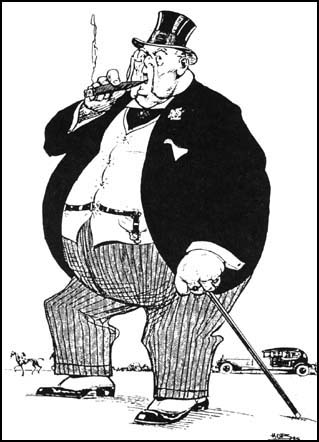

Economic Activity in Context
3 Four Key Economic Activities
- Resource maintenance

4 Production of goods and services

5 Distribution of goods and services

6 Consumption of goods and services

7 Macroeconomics
- The study of the national and global economic environment

9 Global economy

11 Positive Questions

- How long? How heavy? What color? Where is it?
12 Normative Questions

- Is this morally wrong? If so, who is to blame?
13 Macroeconomic Goals
- High living standards

14 Living Standards

16 Living Standards
- over $102,400
- $51,200–102,400
- $25,600–51,200
- $12,800–25,600
- $6,400–12,800
- $3,200–6,400
- $1,600–3,200
- $800–1,600
- $400–800
- below $400
- unavailable

18 What is produced?
- Versus

19 How is it produced?
- Versus

20 For whom is growth occuring?
- Versus


21 Macroeconomic Goals
- Stability and security

25 Sustainability
- Are activities socially sustainable?
- Can some live like this…

26 Sustainability
- Are activities socially sustainable?
- While others live like this…

27 Sustainability

- Are we using oil at an unsustainable rate?
- Are activities ecologically sustainable?
28 Sustainability

- Are activities ecologically sustainable?
31 The Classical School


32 Division of Labor

- "The greatest improvement in the productive powers of labour, and the greater part of the skill, dexterity, and judgement with which it is any where directed, or applied, seem to have been the effects of the division of labour.” – Adam Smith
36 Say Versus Keynes
- Instead of being sold for other goods, goods can pile up in inventories.

37 Monetarism

- Monetary policy is crucial for the macroeconomy
- Mistakes by the government created the Great Depression
38 Classical-Keynesian Synthesis
- Long run: Classic views hold
- Short run: Keynes is more accurate